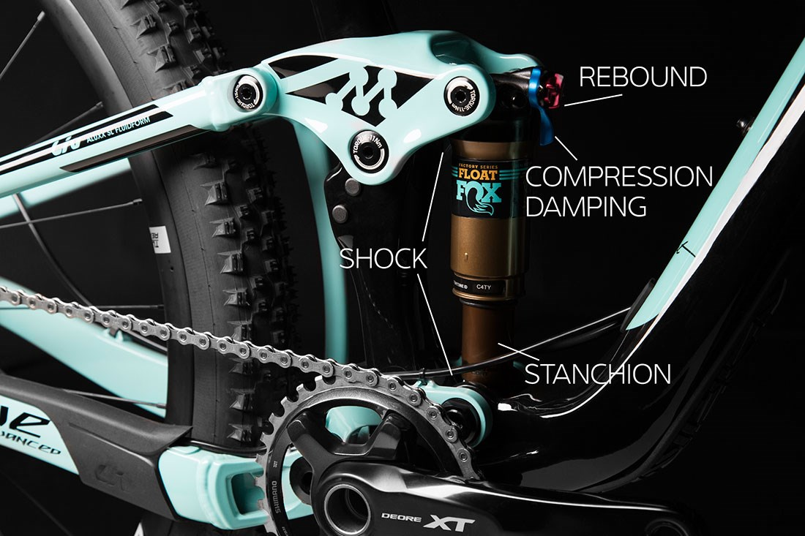
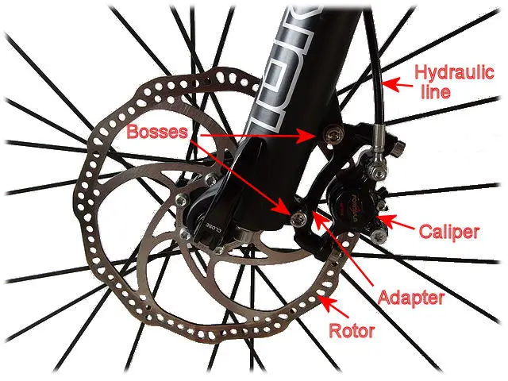

Modern designs of Mountain bike
Gears
Since the 1980s, mountain bikes have had anywhere from 7 to 36 speeds, with 1 to 4 chain-rings on the crankset and 5 to 12 sprockets in the cogset. 30-speed, 33-speed and 36-speed mountain bikes were originally found to be unworkable, as the mud-shedding capabilities of a 10-speed, 11-speed or 12-speed cassette, and the intricacies of a 10-speed, 11-speed or 12-speed rear derailleur were originally not found to be suitable combined with front shifters, although 10, 11 and 12 speed cassettes are now commonplace in single front chainring bicycles, and are also found on some mountain bikes. However, many pro-level mountain bikers have taken to using a narrower 10-speed road chain with a 9-speed setup in an effort to reduce the weight of their bike. In early 2009, component group SRAM announced their release of their XX groupset, which uses a 2-speed front derailleur, and a 10-speed rear derailleur and cassette, similar to that of a road bike. Mud-shedding capabilities of their 10-speed XX cassette are made suitable for MTB use by extensive Computer Numerical Control (CNC) machining of the cassette. Due to the time and cost involved in such a product, they were only aimed at top-end XC-racers. However, 10-speed has become the norm by 2011 and the market leader Shimano even offers its budget groupset "Alivio" in a 10-speed version. In July 2012, SRAM announced a 1x11 drivetrain called XX1 that does not make use of a front derailleur for lighter weight and simplicity. In the 2014 Commonwealth Games at Glasgow all leading riders used 1x11 drivetrains. SRAM's new 1x12 gearing was introduced in 2016 as SRAM Eagle. This gives a single chain ring bike better ability to climb.

Geometry
The critical angles in bicycle geometry are the head angle (the angle of the head tube), and the seat tube angle (the angle of the seat tube). These angles are measured from the horizontal, and drastically affect the rider position and performance characteristics of the bicycle. Mountain bike geometry will often feature a seat tube angle around 73 degrees, with a head tube angle of anywhere from 60 to 73 degrees. The intended application of the bike affects its geometry very heavily. In general, steeper angles (closer to 90 degrees from the horizontal) are more efficient for pedaling up hills and make for sharper handling. Slacker angles (leaning farther from the vertical) are preferred for high speeds and downhill stability.
Suspension
In the past mountain bikes had a rigid frame and fork. In the early 1990s, the first mountain bikes with suspension forks were introduced. This made riding on rough terrain easier and less physically stressful. The first front suspension forks had about 11⁄2 to 2 inches (38 to 50 mm) of suspension travel. Once suspension was introduced, bikes with front suspension and rigid, non-suspended rear wheels, or "hardtails", became popular nearly overnight. While the hardtail design has the benefits of lower cost, less maintenance, and better pedaling efficiency, it is slowly losing popularity due to improvements in full suspension designs. Front fork suspensions are now available with 8 inches (200 mm) of travel or more.
Many new mountain bikes integrate a "full suspension" design known as dual suspension, meaning that both the front and rear wheel are fitted with a shock absorber in some form as the wheel attaches to the bike. This provides a smoother ride as the front and rear wheels can now travel up and down to absorb the force of obstacles striking the tires. Dual suspension bikes of a similar quality are considerably more expensive, but this price increase brings an enormous off-road performance upgrade as dual suspension bikes are much faster on downhill and technical/rough sections, than other forms of the mountain bike. This is because when the wheel strikes an obstacle its tendency is to bounce up. Due to some forward energy being lost in the upward movement some speed is lost. Dual suspension bikes solve this problem by absorbing this upward force and transmit it into the shocks of the front and rear wheels, drastically decreasing the translation of forward momentum into useless upward movement. Disadvantages of rear suspension are increased weight, increased price, and with some designs, decreased pedaling efficiency, which is especially noticeable when cycling on roads and hard trails. At first, early rear suspension designs were overly heavy, and susceptible either to pedaling-induced bobbing or lockout.

Disc brakes
Most new mountain bikes use disc brakes. They offer much improved stopping power (less lever pressure is required providing greater braking modulation) over rim brakes under all conditions [citation needed] especially adverse conditions, because they are located at the center of the wheel (on the wheel hub). They therefore remain drier and cleaner than wheel rims, which are more readily soiled or damaged. The disadvantage of disc brakes is their increased cost and often greater weight. Disc brakes do not allow heat to build up in the tires on long descents; instead, heat builds up in the rotor, which can become extremely hot. There are two different kinds of disc brakes: hydraulic, which uses oil in the lines to push the brake pads against the rotors to stop the bike. They cost more but work better. Mechanical, which uses wires in the lines to pull the pads against the rotors.
